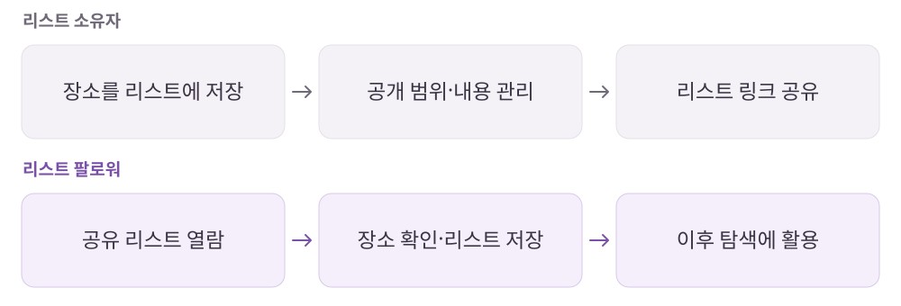

네이버 지도
내가 모은 장소가 다른 사람의 탐색을 도울 때.
장소와 이동 정보를 연결하는 지도 서비스 중 저장 리스트 공유 기능을 분석한 기록.
개인 학습 기록 · 원문에 기록한 당시의 경험을 재구성했습니다. 기획 의도는 개인 해석이며 개선안·확인 지표는 검증 전 제안입니다.
01사용자와 해결 방향
누구를 위한 서비스인가장소를 모으고 관리하는 리스트 소유자와 믿을 만한 장소를 빠르게 찾는 팔로워.
Why · 사용자의 필요
내가 모은 장소를 다시 찾고 공유하고 싶고, 다른 사람이 고른 장소도 간편하게 참고하고 싶다.
What · 서비스의 답
기존 저장 기능을 공유 가능한 리스트로 확장하고, 소유자와 팔로워의 권한을 나눈다.
02핵심 기능과 벤치마킹
- 장소·리스트 저장
- 주제별로 장소를 묶고 별명·메모·관련 URL로 맥락 보존.
- 리스트 공유
- 개별 장소가 아니라 모음 자체를 전달.
- 역할별 권한
- 소유자의 편집과 팔로워의 조회·저장을 구분.
비교해서 살펴본 지점
- 카카오맵
- 즐겨찾기 공유의 진입점과 공유 흐름을 비교.
03사용자 흐름과 기획 의도
같은 리스트, 다른 두 사용자의 흐름

관찰한 경험
- 리스트 소유자는 장소 추가·제거, 목록 편집, 공개 여부 등을 관리하는 흐름으로 정리했습니다.
- 팔로워는 장소 조회와 리스트 저장·공유를 중심으로 이용하며, 소유자의 관리 기능과 구분했습니다.
왜 이렇게 설계했을까 · 나의 해석
- 같은 리스트를 보더라도 소유자와 팔로워의 목적이 다르므로 정보 공개와 수정 권한을 분리해야 한다고 봤습니다.
- 새 기능을 독립적으로 만들기보다 기존 저장 경험을 확장하는 방식에서 기획의 효율을 읽었습니다.
04문제와 개선 제안
Pain Point · 걸리는 지점
- 장소를 하나씩 전달하는 대신 모음 단위로 공유하고, 소유자와 수신자가 할 수 있는 일을 구분할 필요가 있었다.
기획에 가져갈 기준
- 소유자·팔로워별 조회·편집·공유 권한을 정책표로 구분하는 방식을 학습.
- 신규 기능 기획 전 기존 화면·데이터·사용자 행동에서 재사용 가능한 기반을 확인.
확인할 지표 · 검증 계획 제안
리스트 공유 후 열람·저장 전환, 편집 권한에 대한 이해도와 공개 범위 혼동을 확인한다.
05장점과 아쉬운 지점
좋았던 점
- 기존 저장 기능을 활용해 탐색과 공유로 확장한다.
- 타인이 정리한 장소가 다음 사용자의 탐색 출발점이 된다.
아쉬운 점 · 더 살필 점
- 공유·공개 범위와 편집 권한을 혼동하지 않도록 역할별 기준이 필요하다.
06내가 주목한 점
- 새 기능을 만들기 전에 기존 기능의 구조와 재사용할 수 있는 행동을 먼저 볼 것.
- 같은 리스트를 보더라도 소유자·팔로워가 확인하고 변경할 정보는 따로 명세할 것.
분석 원문네이버 지도 · 노션 원문 ↗